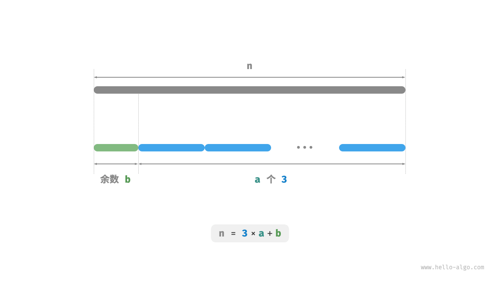

最大切分乘积问题
!!! question
给定一个正整数 $n$ ，将其切分为至少两个正整数的和，求切分后所有整数的乘积最大是多少，如下图所示。

假设我们将 $n$ 切分为 $m$ 个整数因子，其中第 $i$ 个因子记为 $n_i$ ，即
$$ n = \sum_{i=1}^{m}n_i
$$
本题的目标是求得所有整数因子的最大乘积，即
$$ \max(\prod_{i=1}^{m}n_i)
$$
我们需要思考的是：切分数量 $m$ 应该多大，每个 $n_i$ 应该是多少？
贪心策略确定
根据经验，两个整数的乘积往往比它们的加和更大。假设从 $n$ 中分出一个因子 $2$ ，则它们的乘积为 $2(n-2)$ 。我们将该乘积与 $n$ 作比较：
$$ \begin{aligned} 2(n-2) & \geq n \newline 2n - n - 4 & \geq 0 \newline n & \geq 4 \end{aligned}
$$
如下图所示，当 $n \geq 4$ 时，切分出一个 $2$ 后乘积会变大，这说明大于等于 $4$ 的整数都应该被切分。
贪心策略一：如果切分方案中包含 $\geq 4$ 的因子，那么它就应该被继续切分。最终的切分方案只应出现 $1$、$2$、$3$ 这三种因子。

接下来思考哪个因子是最优的。在 $1$、$2$、$3$ 这三个因子中，显然 $1$ 是最差的，因为 $1 \times (n-1) < n$ 恒成立，即切分出 $1$ 反而会导致乘积减小。
如下图所示，当 $n = 6$ 时，有 $3 \times 3 > 2 \times 2 \times 2$ 。这意味着切分出 $3$ 比切分出 $2$ 更优。
贪心策略二：在切分方案中，最多只应存在两个 $2$ 。因为三个 $2$ 总是可以替换为两个 $3$ ，从而获得更大的乘积。

综上所述，可推理出以下贪心策略。
- 输入整数 $n$ ，从其不断地切分出因子 $3$ ，直至余数为 $0$、$1$、$2$ 。
- 当余数为 $0$ 时，代表 $n$ 是 $3$ 的倍数，因此不做任何处理。
- 当余数为 $2$ 时，不继续划分，保留。
- 当余数为 $1$ 时，由于 $2 \times 2 > 1 \times 3$ ，因此应将最后一个 $3$ 替换为 $2$ 。
代码实现
如下图所示，我们无须通过循环来切分整数，而可以利用向下整除运算得到 $3$ 的个数 $a$ ，用取模运算得到余数 $b$ ，此时有：
$$ n = 3 a + b
$$
请注意，对于 $n \leq 3$ 的边界情况，必须拆分出一个 $1$ ，乘积为 $1 \times (n - 1)$ 。
"Python"
def max_product_cutting(n: int) -> int: """最大切分乘积：贪心""" // 当 n <= 3 时，必须切分出一个 1 if n <= 3: return 1 * (n - 1) // 贪心地切分出 3 ，a 为 3 的个数，b 为余数 a, b = n // 3, n % 3 if b == 1: // 当余数为 1 时，将一对 1 * 3 转化为 2 * 2 return int(math.pow(3, a - 1)) * 2 * 2 if b == 2: // 当余数为 2 时，不做处理 return int(math.pow(3, a)) * 2 // 当余数为 0 时，不做处理 return int(math.pow(3, a))"C++"
/* 最大切分乘积：贪心 */ int maxProductCutting(int n) { // 当 n <= 3 时，必须切分出一个 1 if (n <= 3) { return 1 * (n - 1); } // 贪心地切分出 3 ，a 为 3 的个数，b 为余数 int a = n / 3; int b = n % 3; if (b == 1) { // 当余数为 1 时，将一对 1 * 3 转化为 2 * 2 return (int)pow(3, a - 1) * 2 * 2; } if (b == 2) { // 当余数为 2 时，不做处理 return (int)pow(3, a) * 2; } // 当余数为 0 时，不做处理 return (int)pow(3, a); }"Java"
/* 最大切分乘积：贪心 */ int maxProductCutting(int n) { // 当 n <= 3 时，必须切分出一个 1 if (n <= 3) { return 1 * (n - 1); } // 贪心地切分出 3 ，a 为 3 的个数，b 为余数 int a = n / 3; int b = n % 3; if (b == 1) { // 当余数为 1 时，将一对 1 * 3 转化为 2 * 2 return (int) Math.pow(3, a - 1) * 2 * 2; } if (b == 2) { // 当余数为 2 时，不做处理 return (int) Math.pow(3, a) * 2; } // 当余数为 0 时，不做处理 return (int) Math.pow(3, a); }

时间复杂度取决于编程语言的幂运算的实现方法。以 Python 为例，常用的幂计算函数有三种。
- 运算符
**和函数pow()的时间复杂度均为 $O(\log a)$ 。 - 函数
math.pow()内部调用 C 语言库的pow()函数，其执行浮点取幂，时间复杂度为 $O(1)$ 。
变量 $a$ 和 $b$ 使用常数大小的额外空间，因此空间复杂度为 $O(1)$ 。
正确性证明
使用反证法，只分析 $n \geq 3$ 的情况。
- 所有因子 $\leq 3$ ：假设最优切分方案中存在 $\geq 4$ 的因子 $x$ ，那么一定可以将其继续划分为 $2(x-2)$ ，从而获得更大的乘积。这与假设矛盾。
- 切分方案不包含 $1$ ：假设最优切分方案中存在一个因子 $1$ ，那么它一定可以合并入另外一个因子中，以获得更大的乘积。这与假设矛盾。
- 切分方案最多包含两个 $2$ ：假设最优切分方案中包含三个 $2$ ，那么一定可以替换为两个 $3$ ，乘积更大。这与假设矛盾。